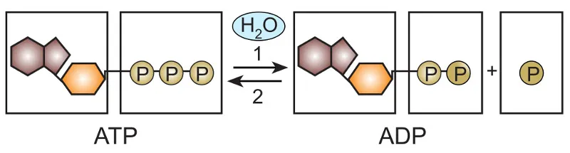

Conteúdo
Produção de ATP
Na respiração celular (um processo aeróbio que ocorre na presença de oxigênio), há a decomposição de matéria orgânica em dióxido de carbono e água, liberando-se energia. Para cada molécula de glicose oxidada no processo de respiração celular, obtém-se um saldo energético final de cerca de 32 moléculas de ATP.
Processo de Respiração celular
Respiração celular é um processo pelo qual os organismos obtêm energia para realizar as mais diversas atividades. A respiração celular ocorre nas mitocôndrias, em presença de oxigênio, e é divida em três etapas: a glicólise, o ciclo do ácido cítrico (ou ciclo de Krebs) e a fosforilação oxidativa.
Importância da Respiração Celular para os seres vivos
A respiração celular é o processo químico realizado pelos seres vivos e que acontece dentro das células. Ela é necessária para manter o funcionamento do nosso corpo e pode ser realizada de duas maneiras: respiração aeróbica (utiliza oxigênio) e respiração anaeróbica (não utiliza oxigênio).
Mitocondria: A Usina da celula
Mitocôndrias são as "usinas de energia" da célula, quebrando moléculas de combustível e capturando energia na respiração celular. Cloroplastos são encontrados em plantas e algas. Eles são responsáveis pela captura de energia luminosa para fabricar açúcares na fotossíntese.
Respiração aeróbica vs. anaeróbica
A respiração aeróbica é aquela que utiliza oxigênio como aceptor final. A anaeróbica, por sua vez, não utiliza essa substância. A grande maioria dos seres vivos realiza respiração aeróbica para produzir energia, entre eles algumas bactérias, protistas, fungos, plantas e animais.
Ciclo de Krebs
O Ciclo de Krebs ou ciclo do ácido cítrico ocorre em oito etapas distintas. Cada uma das etapas é catalizada por uma enzima diferente. O Ciclo tem início após o processo de glicólise,como a entrada do piruvato na mitocôndria. O piruvato é convertido em um composto denominado acetil- coA ou acetil coenzima A.